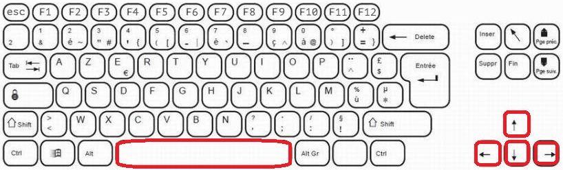
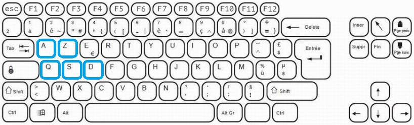

|
Rope Rampart
|
|
Rope Rampart
|
Code source du jeu Rope Rampart, un jeu de défense d'un château avec 2 personnages liés par une corde !
Pour installer la bibliothèque SFML, tapez cette commande sur votre terminal :
Vous pouvez commencer à jouer au jeu !
Le jeu est le suivant :
C'est un jeu à deux joueurs dont le but est de défendre le château des vagues de robots. Le jeu se termine si le château est détruit ou si un des deux joueurs meurt. Bien sûr, pour rendre le jeu plus original et plus difficile, les deux joueurs sont attachés par une corde empêchant de s'éloigner l'un de l'autre.
Le jeu se déroule dans une carte 2D vue de dessus avec dans le coin à droite une minimap pour voir l'arrivée des robots.
Chaque joueur se déplace en utilisant 4 touches du clavier :


Le jeu devient de plus en plus dur au fil des vagues avec plus de robots et de "Bombot".
La documentation du code se trouve dans le dossier Documentation